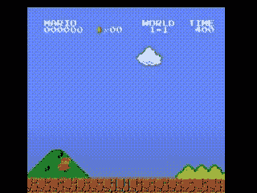
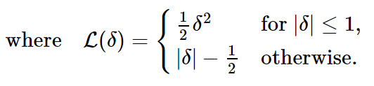

训练玩马里奥的 RL 智能体
原文：https://pytorch.org/tutorials/intermediate/mario_rl_tutorial.html
Authors: Yuansong Feng , Suraj Subramanian , Howard Wang , Steven Guo .
本教程将向您介绍深度强化学习的基础知识。 最后，您将实现一个 AI 驱动的马里奥（使用双重深度 Q 网络），它可以自己玩游戏。
尽管本教程不需要任何有关 RL 的先验知识，但是您可以熟悉这些 RL 概念，并将此方便的备忘单作为您的伴侣。完整代码可在此处获得。

# !pip install gym-super-mario-bros==7.3.0
import torch
from torch import nn
from torchvision import transforms as T
from PIL import Image
import numpy as np
from pathlib import Path
from collections import deque
import random, datetime, os, copy
# Gym is an OpenAI toolkit for RL
import gym
from gym.spaces import Box
from gym.wrappers import FrameStack
# NES Emulator for OpenAI Gym
from nes_py.wrappers import JoypadSpace
# Super Mario environment for OpenAI Gym
import gym_super_mario_bros
RL 定义
环境：智能体与之交互并学习的世界。
操作a：智能体如何响应环境。 所有可能动作的集合称为动作空间。
状态s：环境的当前特征。 环境可以处于的所有可能状态的集合称为状态空间。
奖励r：奖励是从环境到智能体的关键反馈。 这是驱动智能体学习并改变其未来行动的动力。 多个时间步长上的奖励汇总称为回报。
最佳操作的值函数Q*(s, a)：如果您以状态s开始，执行任意操作a并给出期望的回报， 然后针对每个未来时间步长采取使收益最大化的行动。 可以说Q代表状态中动作的“质量”。 我们尝试近似该函数。
环境
初始化环境
在马里奥，环境由试管，蘑菇和其他成分组成。
当马里奥采取行动时，环境会以已更改的（下一个）状态，奖励和其他信息作为响应。
# Initialize Super Mario environment
env = gym_super_mario_bros.make("SuperMarioBros-1-1-v0")
# Limit the action-space to
# 0\. walk right
# 1\. jump right
env = JoypadSpace(env, [["right"], ["right", "A"]])
env.reset()
next_state, reward, done, info = env.step(action=0)
print(f"{next_state.shape},\n {reward},\n {done},\n {info}")
出：
(240, 256, 3),
0,
False,
{'coins': 0, 'flag_get': False, 'life': 2, 'score': 0, 'stage': 1, 'status': 'small', 'time': 400, 'world': 1, 'x_pos': 40, 'x_pos_screen': 40, 'y_pos': 79}
预处理环境
环境数据在next_state中返回给智能体。 正如您在上面看到的，每个状态都由[3, 240, 256]大小数组表示。 通常，这比我们的智能体需要的信息更多； 例如，马里奥的举动并不取决于管道或天空的颜色！
我们使用包装程序在将环境数据发送到智能体之前对其进行预处理。
GrayScaleObservation是将 RGB 图像转换为灰度的通用包装器； 这样做可以减少状态表示的大小，而不会丢失有用的信息。 现在每个状态的大小：[1, 240, 256]
ResizeObservation将每个观察值下采样为正方形图像。 新尺寸：[1, 84, 84]
SkipFrame是一个自定义包装器，它继承自gym.Wrapper并实现了step()函数。 由于连续的帧变化不大，因此我们可以跳过 n 个中间帧而不会丢失太多信息。 第 n 帧聚集在每个跳过的帧上累积的奖励。
FrameStack是一个包装器，它使我们可以将环境的连续帧压缩到单个观察点中，以提供给我们的学习模型。 这样，我们可以根据前几个帧中马里奥的运动方向来确定马里奥是在降落还是跳跃。
class SkipFrame(gym.Wrapper):
def __init__(self, env, skip):
"""Return only every `skip`-th frame"""
super().__init__(env)
self._skip = skip
def step(self, action):
"""Repeat action, and sum reward"""
total_reward = 0.0
done = False
for i in range(self._skip):
# Accumulate reward and repeat the same action
obs, reward, done, info = self.env.step(action)
total_reward += reward
if done:
break
return obs, total_reward, done, info
class GrayScaleObservation(gym.ObservationWrapper):
def __init__(self, env):
super().__init__(env)
obs_shape = self.observation_space.shape[:2]
self.observation_space = Box(low=0, high=255, shape=obs_shape, dtype=np.uint8)
def permute_orientation(self, observation):
# permute [H, W, C] array to [C, H, W] tensor
observation = np.transpose(observation, (2, 0, 1))
observation = torch.tensor(observation.copy(), dtype=torch.float)
return observation
def observation(self, observation):
observation = self.permute_orientation(observation)
transform = T.Grayscale()
observation = transform(observation)
return observation
class ResizeObservation(gym.ObservationWrapper):
def __init__(self, env, shape):
super().__init__(env)
if isinstance(shape, int):
self.shape = (shape, shape)
else:
self.shape = tuple(shape)
obs_shape = self.shape + self.observation_space.shape[2:]
self.observation_space = Box(low=0, high=255, shape=obs_shape, dtype=np.uint8)
def observation(self, observation):
transforms = T.Compose(
[T.Resize(self.shape), T.Normalize(0, 255)]
)
observation = transforms(observation).squeeze(0)
return observation
# Apply Wrappers to environment
env = SkipFrame(env, skip=4)
env = GrayScaleObservation(env)
env = ResizeObservation(env, shape=84)
env = FrameStack(env, num_stack=4)
将上述包装纸应用于环境后，最终的包装状态由 4 个灰度连续的帧堆叠在一起组成，如左图所示。 每次马里奥采取行动时，环境都会以这种结构的状态做出响应。 该结构由大小为[4, 84, 84]的 3D 数组表示。

智能体
我们创建一个类Mario来表示我们的智能体在游戏中。 马里奥应该能够：
- 根据（环境的）当前状态，执行最佳操作策略。
- 记住经验。 经验为（当前状态，当前动作，奖励，下一个状态）。 马里奥缓存并且后来回忆起他的经验来更新其行动策略。
- 逐步了解更好的操作策略
class Mario:
def __init__():
pass
def act(self, state):
"""Given a state, choose an epsilon-greedy action"""
pass
def cache(self, experience):
"""Add the experience to memory"""
pass
def recall(self):
"""Sample experiences from memory"""
pass
def learn(self):
"""Update online action value (Q) function with a batch of experiences"""
pass
在以下各节中，我们将填充马里奥的参数并定义其函数。
行动
对于任何给定状态，智能体都可以选择执行最佳操作（利用）或执行随机操作（探索）。
马里奥随机发掘并发self.exploration_rate 当他选择利用时，他依靠MarioNet（在Learn部分中实现）提供最佳操作。
class Mario:
def __init__(self, state_dim, action_dim, save_dir):
self.state_dim = state_dim
self.action_dim = action_dim
self.save_dir = save_dir
self.use_cuda = torch.cuda.is_available()
# Mario's DNN to predict the most optimal action - we implement this in the Learn section
self.net = MarioNet(self.state_dim, self.action_dim).float()
if self.use_cuda:
self.net = self.net.to(device="cuda")
self.exploration_rate = 1
self.exploration_rate_decay = 0.99999975
self.exploration_rate_min = 0.1
self.curr_step = 0
self.save_every = 5e5 # no. of experiences between saving Mario Net
def act(self, state):
"""
Given a state, choose an epsilon-greedy action and update value of step.
Inputs:
state(LazyFrame): A single observation of the current state, dimension is (state_dim)
Outputs:
action_idx (int): An integer representing which action Mario will perform
"""
# EXPLORE
if np.random.rand() < self.exploration_rate:
action_idx = np.random.randint(self.action_dim)
# EXPLOIT
else:
state = state.__array__()
if self.use_cuda:
state = torch.tensor(state).cuda()
else:
state = torch.tensor(state)
state = state.unsqueeze(0)
action_values = self.net(state, model="online")
action_idx = torch.argmax(action_values, axis=1).item()
# decrease exploration_rate
self.exploration_rate *= self.exploration_rate_decay
self.exploration_rate = max(self.exploration_rate_min, self.exploration_rate)
# increment step
self.curr_step += 1
return action_idx
缓存和回忆
这两个函数是马里奥的“记忆”过程。
cache()：每次马里奥执行操作时，都会将experience存储到他的内存中。 他的经验包括当前状态，动作，从动作中获得的奖励，下一个状态以及游戏是否为完成。
recall()：马里奥从他的记忆中随机抽取一批经验，并以此来学习游戏。
class Mario(Mario): # subclassing for continuity
def __init__(self, state_dim, action_dim, save_dir):
super().__init__(state_dim, action_dim, save_dir)
self.memory = deque(maxlen=100000)
self.batch_size = 32
def cache(self, state, next_state, action, reward, done):
"""
Store the experience to self.memory (replay buffer)
Inputs:
state (LazyFrame),
next_state (LazyFrame),
action (int),
reward (float),
done(bool))
"""
state = state.__array__()
next_state = next_state.__array__()
if self.use_cuda:
state = torch.tensor(state).cuda()
next_state = torch.tensor(next_state).cuda()
action = torch.tensor([action]).cuda()
reward = torch.tensor([reward]).cuda()
done = torch.tensor([done]).cuda()
else:
state = torch.tensor(state)
next_state = torch.tensor(next_state)
action = torch.tensor([action])
reward = torch.tensor([reward])
done = torch.tensor([done])
self.memory.append((state, next_state, action, reward, done,))
def recall(self):
"""
Retrieve a batch of experiences from memory
"""
batch = random.sample(self.memory, self.batch_size)
state, next_state, action, reward, done = map(torch.stack, zip(*batch))
return state, next_state, action.squeeze(), reward.squeeze(), done.squeeze()
学习
马里奥在后台使用 DDQN 算法。 DDQN 使用两个 ConvNet-Q_online和Q_target-独立地逼近最佳作用值函数。
在我们的实现中，我们在Q_online和Q_target之间共享特征生成器features，但是为每个特征维护单独的 FC 分类器。 θ_target（Q_target的参数）被冻结，以防止反向传播进行更新。 而是定期与θ_online同步（稍后会对此进行详细介绍）。
神经网络
class MarioNet(nn.Module):
"""mini cnn structure
input -> (conv2d + relu) x 3 -> flatten -> (dense + relu) x 2 -> output
"""
def __init__(self, input_dim, output_dim):
super().__init__()
c, h, w = input_dim
if h != 84:
raise ValueError(f"Expecting input height: 84, got: {h}")
if w != 84:
raise ValueError(f"Expecting input width: 84, got: {w}")
self.online = nn.Sequential(
nn.Conv2d(in_channels=c, out_channels=32, kernel_size=8, stride=4),
nn.ReLU(),
nn.Conv2d(in_channels=32, out_channels=64, kernel_size=4, stride=2),
nn.ReLU(),
nn.Conv2d(in_channels=64, out_channels=64, kernel_size=3, stride=1),
nn.ReLU(),
nn.Flatten(),
nn.Linear(3136, 512),
nn.ReLU(),
nn.Linear(512, output_dim),
)
self.target = copy.deepcopy(self.online)
# Q_target parameters are frozen.
for p in self.target.parameters():
p.requires_grad = False
def forward(self, input, model):
if model == "online":
return self.online(input)
elif model == "target":
return self.target(input)
TD 估计和 TD 目标
学习涉及两个值：
TD 估计-给定状态s的预测最佳Q*

TD 目标-当前奖励和下一状态s'中的估计Q*的汇总


由于我们不知道下一个动作a'是什么，因此我们在下一个状态s'中使用动作a'最大化Q_online。
请注意，我们在td_target()上使用了@torch.no_grad()装饰器来禁用梯度计算（因为我们无需在θ_target上进行反向传播。）
class Mario(Mario):
def __init__(self, state_dim, action_dim, save_dir):
super().__init__(state_dim, action_dim, save_dir)
self.gamma = 0.9
def td_estimate(self, state, action):
current_Q = self.net(state, model="online")[
np.arange(0, self.batch_size), action
] # Q_online(s,a)
return current_Q
@torch.no_grad()
def td_target(self, reward, next_state, done):
next_state_Q = self.net(next_state, model="online")
best_action = torch.argmax(next_state_Q, axis=1)
next_Q = self.net(next_state, model="target")[
np.arange(0, self.batch_size), best_action
]
return (reward + (1 - done.float()) * self.gamma * next_Q).float()
更新模型
当马里奥从其重播缓冲区中采样输入时，我们计算TD_t和TD_e并反向传播该损失Q_online以更新其参数θ_online（\ （\ alpha \）是传递给optimizer的学习率lr）

θ_target不会通过反向传播进行更新。 相反，我们会定期将θ_online复制到θ_target

class Mario(Mario):
def __init__(self, state_dim, action_dim, save_dir):
super().__init__(state_dim, action_dim, save_dir)
self.optimizer = torch.optim.Adam(self.net.parameters(), lr=0.00025)
self.loss_fn = torch.nn.SmoothL1Loss()
def update_Q_online(self, td_estimate, td_target):
loss = self.loss_fn(td_estimate, td_target)
self.optimizer.zero_grad()
loss.backward()
self.optimizer.step()
return loss.item()
def sync_Q_target(self):
self.net.target.load_state_dict(self.net.online.state_dict())
保存检查点
class Mario(Mario):
def save(self):
save_path = (
self.save_dir / f"mario_net_{int(self.curr_step // self.save_every)}.chkpt"
)
torch.save(
dict(model=self.net.state_dict(), exploration_rate=self.exploration_rate),
save_path,
)
print(f"MarioNet saved to {save_path} at step {self.curr_step}")
全部放在一起
class Mario(Mario):
def __init__(self, state_dim, action_dim, save_dir):
super().__init__(state_dim, action_dim, save_dir)
self.burnin = 1e4 # min. experiences before training
self.learn_every = 3 # no. of experiences between updates to Q_online
self.sync_every = 1e4 # no. of experiences between Q_target & Q_online sync
def learn(self):
if self.curr_step % self.sync_every == 0:
self.sync_Q_target()
if self.curr_step % self.save_every == 0:
self.save()
if self.curr_step < self.burnin:
return None, None
if self.curr_step % self.learn_every != 0:
return None, None
# Sample from memory
state, next_state, action, reward, done = self.recall()
# Get TD Estimate
td_est = self.td_estimate(state, action)
# Get TD Target
td_tgt = self.td_target(reward, next_state, done)
# Backpropagate loss through Q_online
loss = self.update_Q_online(td_est, td_tgt)
return (td_est.mean().item(), loss)
日志记录
import numpy as np
import time, datetime
import matplotlib.pyplot as plt
class MetricLogger:
def __init__(self, save_dir):
self.save_log = save_dir / "log"
with open(self.save_log, "w") as f:
f.write(
f"{'Episode':>8}{'Step':>8}{'Epsilon':>10}{'MeanReward':>15}"
f"{'MeanLength':>15}{'MeanLoss':>15}{'MeanQValue':>15}"
f"{'TimeDelta':>15}{'Time':>20}\n"
)
self.ep_rewards_plot = save_dir / "reward_plot.jpg"
self.ep_lengths_plot = save_dir / "length_plot.jpg"
self.ep_avg_losses_plot = save_dir / "loss_plot.jpg"
self.ep_avg_qs_plot = save_dir / "q_plot.jpg"
# History metrics
self.ep_rewards = []
self.ep_lengths = []
self.ep_avg_losses = []
self.ep_avg_qs = []
# Moving averages, added for every call to record()
self.moving_avg_ep_rewards = []
self.moving_avg_ep_lengths = []
self.moving_avg_ep_avg_losses = []
self.moving_avg_ep_avg_qs = []
# Current episode metric
self.init_episode()
# Timing
self.record_time = time.time()
def log_step(self, reward, loss, q):
self.curr_ep_reward += reward
self.curr_ep_length += 1
if loss:
self.curr_ep_loss += loss
self.curr_ep_q += q
self.curr_ep_loss_length += 1
def log_episode(self):
"Mark end of episode"
self.ep_rewards.append(self.curr_ep_reward)
self.ep_lengths.append(self.curr_ep_length)
if self.curr_ep_loss_length == 0:
ep_avg_loss = 0
ep_avg_q = 0
else:
ep_avg_loss = np.round(self.curr_ep_loss / self.curr_ep_loss_length, 5)
ep_avg_q = np.round(self.curr_ep_q / self.curr_ep_loss_length, 5)
self.ep_avg_losses.append(ep_avg_loss)
self.ep_avg_qs.append(ep_avg_q)
self.init_episode()
def init_episode(self):
self.curr_ep_reward = 0.0
self.curr_ep_length = 0
self.curr_ep_loss = 0.0
self.curr_ep_q = 0.0
self.curr_ep_loss_length = 0
def record(self, episode, epsilon, step):
mean_ep_reward = np.round(np.mean(self.ep_rewards[-100:]), 3)
mean_ep_length = np.round(np.mean(self.ep_lengths[-100:]), 3)
mean_ep_loss = np.round(np.mean(self.ep_avg_losses[-100:]), 3)
mean_ep_q = np.round(np.mean(self.ep_avg_qs[-100:]), 3)
self.moving_avg_ep_rewards.append(mean_ep_reward)
self.moving_avg_ep_lengths.append(mean_ep_length)
self.moving_avg_ep_avg_losses.append(mean_ep_loss)
self.moving_avg_ep_avg_qs.append(mean_ep_q)
last_record_time = self.record_time
self.record_time = time.time()
time_since_last_record = np.round(self.record_time - last_record_time, 3)
print(
f"Episode {episode} - "
f"Step {step} - "
f"Epsilon {epsilon} - "
f"Mean Reward {mean_ep_reward} - "
f"Mean Length {mean_ep_length} - "
f"Mean Loss {mean_ep_loss} - "
f"Mean Q Value {mean_ep_q} - "
f"Time Delta {time_since_last_record} - "
f"Time {datetime.datetime.now().strftime('%Y-%m-%dT%H:%M:%S')}"
)
with open(self.save_log, "a") as f:
f.write(
f"{episode:8d}{step:8d}{epsilon:10.3f}"
f"{mean_ep_reward:15.3f}{mean_ep_length:15.3f}{mean_ep_loss:15.3f}{mean_ep_q:15.3f}"
f"{time_since_last_record:15.3f}"
f"{datetime.datetime.now().strftime('%Y-%m-%dT%H:%M:%S'):>20}\n"
)
for metric in ["ep_rewards", "ep_lengths", "ep_avg_losses", "ep_avg_qs"]:
plt.plot(getattr(self, f"moving_avg_{metric}"))
plt.savefig(getattr(self, f"{metric}_plot"))
plt.clf()
开始吧！
在此示例中，我们运行了 10 个剧集的训练循环，但是对于马里奥要真正了解他的世界的方式，我们建议运行至少 40,000 个剧集的循环！
use_cuda = torch.cuda.is_available()
print(f"Using CUDA: {use_cuda}")
print()
save_dir = Path("checkpoints") / datetime.datetime.now().strftime("%Y-%m-%dT%H-%M-%S")
save_dir.mkdir(parents=True)
mario = Mario(state_dim=(4, 84, 84), action_dim=env.action_space.n, save_dir=save_dir)
logger = MetricLogger(save_dir)
episodes = 10
for e in range(episodes):
state = env.reset()
# Play the game!
while True:
# Run agent on the state
action = mario.act(state)
# Agent performs action
next_state, reward, done, info = env.step(action)
# Remember
mario.cache(state, next_state, action, reward, done)
# Learn
q, loss = mario.learn()
# Logging
logger.log_step(reward, loss, q)
# Update state
state = next_state
# Check if end of game
if done or info["flag_get"]:
break
logger.log_episode()
if e % 20 == 0:
logger.record(episode=e, epsilon=mario.exploration_rate, step=mario.curr_step)
出：
Using CUDA: True
Episode 0 - Step 40 - Epsilon 0.9999900000487484 - Mean Reward 231.0 - Mean Length 40.0 - Mean Loss 0.0 - Mean Q Value 0.0 - Time Delta 0.444 - Time 2021-01-05T20:23:08
总结
在本教程中，我们看到了如何使用 PyTorch 来训练玩游戏的 AI。 您可以使用相同的方法训练 AI 在 OpenAI Gym上玩任何游戏。 希望您喜欢本教程，请随时通过我们的 Github 与我们联系！
脚本的总运行时间：（0 分钟 21.485 秒）
下载 Python 源码：mario_rl_tutorial.py
下载 Jupyter 笔记本：mario_rl_tutorial.ipynb
由 Sphinx 画廊生成的画廊